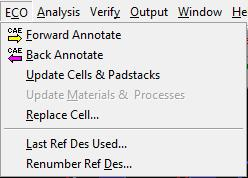

ECO Menu:
This is how the ECO menu looks:

(1-ECO_menu.jpg)
This menu is used to make sure that your Expedition PCB board and parts are connected with any changes you may have made to either your Central Library or your schematic from DxDesigner.
The "Forward Annotate" option brings any changes from your DxDesigner schematic to your board in Expedition PCB.
The "Back Annotate" option brings any changes from your Expedition PCB board to your DxDesigner schematic. It is not recommended to make board changes and then use the "Back Annotate" button. Instead, you should be concerned with making changes to your schematic and then forward annotating. Your DxDesigner schematic is for specifying the connectivity of your parts and your Expedition PCB board is for the actual implementation of those connections between parts.
The "Update Cells & Padstacks" option is used to update the local library with changes that have been made to your central library. You must always run this option after you have changed a cell or padstack in your central library or you may find that your Gerber files will have data from your older cells/padstacks. This is the kind of problem that we would find only after getting our board back from the fabrication house.